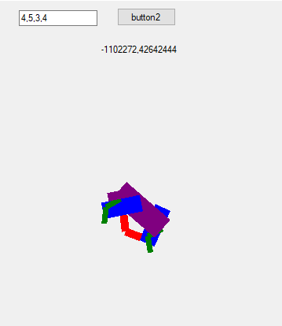
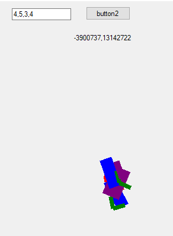
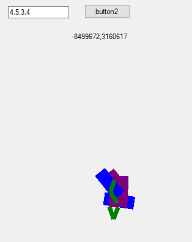

Ezek egy kissebb projektemből maradtak, ami szintén a tanuló gépeken alapszik, ezek emberek akrnának lenni akik épp azért versenyeznek, hogy lehető legkissebb munka árán a legygyorsabban jutassák lef a dobozt a kezükhöz ragasztva, a fejük fölé, sajnos a végtagjaikat rosszul csináltam meg, ezért éppen mindig a biológiával ellentétesen cselekednek. Ennek a fejlesztett változata a vezetni tanuló autók amin épp most dolgozok, de az épp nem működik, mert mostanában kezdetm el átírni a kódot, hogy vektorokkal működjön, ezért nem indul el még.